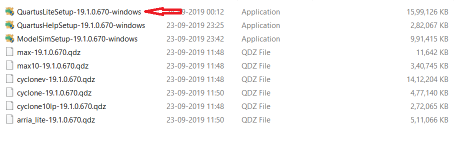
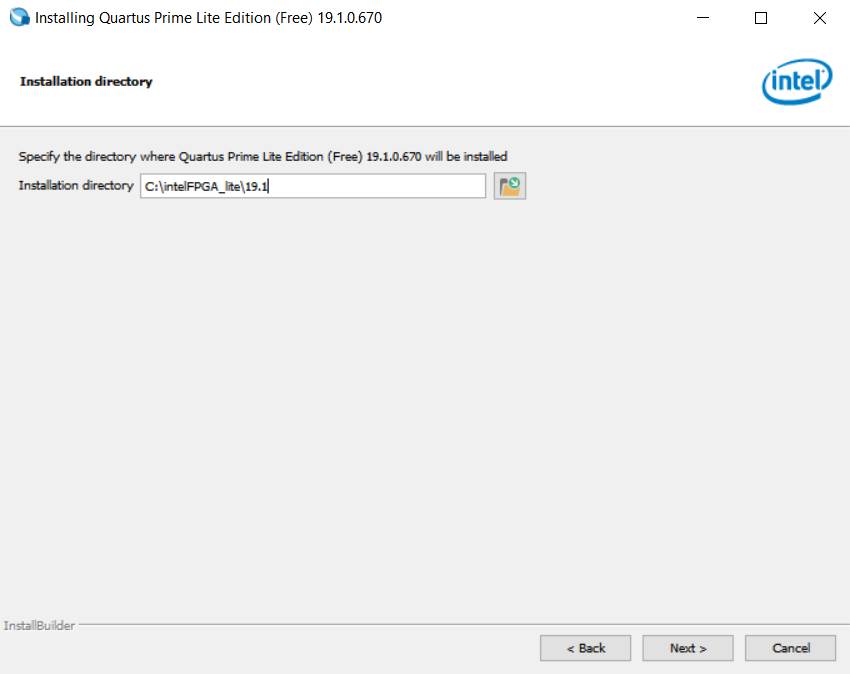
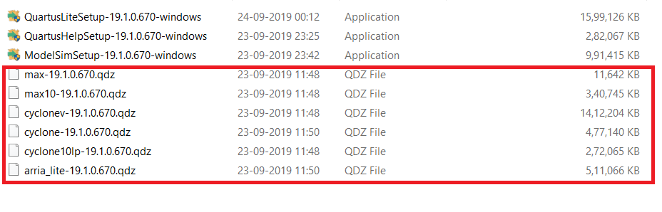

1. Introduction & Installation
Intel Quartus Prime is programmable logic device design software by Intel; prior to Intel’s acquisition of Altera the tool was called Altera Quartus Prime, earlier Altera Quartus II. Quartus
Prime enables analysis and synthesis of HDL designs, which enables the developer to compile their designs, perform timing analysis, examine RTL diagrams, simulate a design’s reaction to
different stimuli, and configure the target device with the programmer. Quartus Prime includes an implementation of VHDL and Verilog for hardware description, visual editing of logic circuits, and vector waveform simulation.
ModelSim is a multi-language HDL simulation environment by Mentor Graphics, for simulation of hardware description languages such as VHDL, Verilog and SystemC, and includes a
built-in C debugger. ModelSim can be used independently, or in conjunction with Intel Quartus Prime, Xilinx ISE or Xilinx Vivado. Simulation is performed using the graphical user interface
(GUI), or automatically using scripts.
1.1 Installing Quartus and ModelSim
In this part, we will walk through the process of installing the software Quartus Prime Lite
Edition Version 19.1. Click here to download the software.
System Requirement:
- A full installation of the Intel FPGA Complete Design Suite v19.1 requires approximately 14GB of available disk space on the drive or partition where you are installing the software.
- Recommended Physical RAM requirement is more than 2GB.
If you are running any type of antivirus software, you can temporarily disable the software
during the Quartus Prime software download and installation process to avoid unnecessary
issues. On the Download Page select the edition as lite and select version as 19.1. Also select
the desired operating system. We selected Windows for further installation.

Method 1. Download using Complete Software Package (Recommended)

- The Combined Files download includes a number of additional software components. This file provides device support for various device families.
- Arria II device support.
- Cyclone IV device support.
- Cyclone 10 LP device support.
- Cyclone V device support.
- MAX II, MAX V device support.
- After download is done on your local machine, extract the file using WinZip or any other software.
- Click on the Quartus Lite Setup (this file is located in components subfolder) and Allow the application to install it on your device.
- Click on Next to start with the installation.
- Click on I accept the agreement and proceed.
- Enter the path where you need the software to be installed.
- After this the installation starts and may take some time to complete. ModelSim and QuartusHelp will also get installed.




Method 2. Download using Individual Software Package


- In Individual Files download, download both Quartus Prime lite edition and ModelSim, you also need to download files to get support for a particular device family.
- Select from the below option which are necessary.
- Arria II device support.
- Cyclone IV device support. (Necessary)
- Cyclone 10 LP device support.
- Cyclone V device support.
- MAX II, MAX V device support.
- Download Cyclone IV device support as Intel DE0-Nano board uses Altera Cyclone IV, it will also support other device from the same family.
- After downloading necessary files extract them in a single folder and Click on the Quartus Lite Setup and Allow the application to install it on your device.
- Click on Next to start with the installation.
- Click on I accept the agreement and proceed.
- Enter the path where you need the software to be installed.
- After this the installation starts and may take some time to complete. ModelSim and QuartusHelp will also get installed.
- Copy the below files or Cyclone IV device support file (Necessary file) and paste it in the C:/intelFPGA lite/19.1/modelsim ase/win32aloem folder to get support of the device families while creating project.
